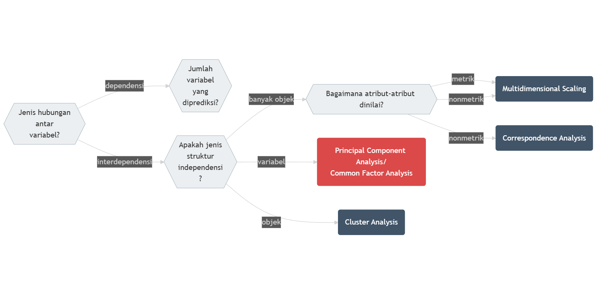
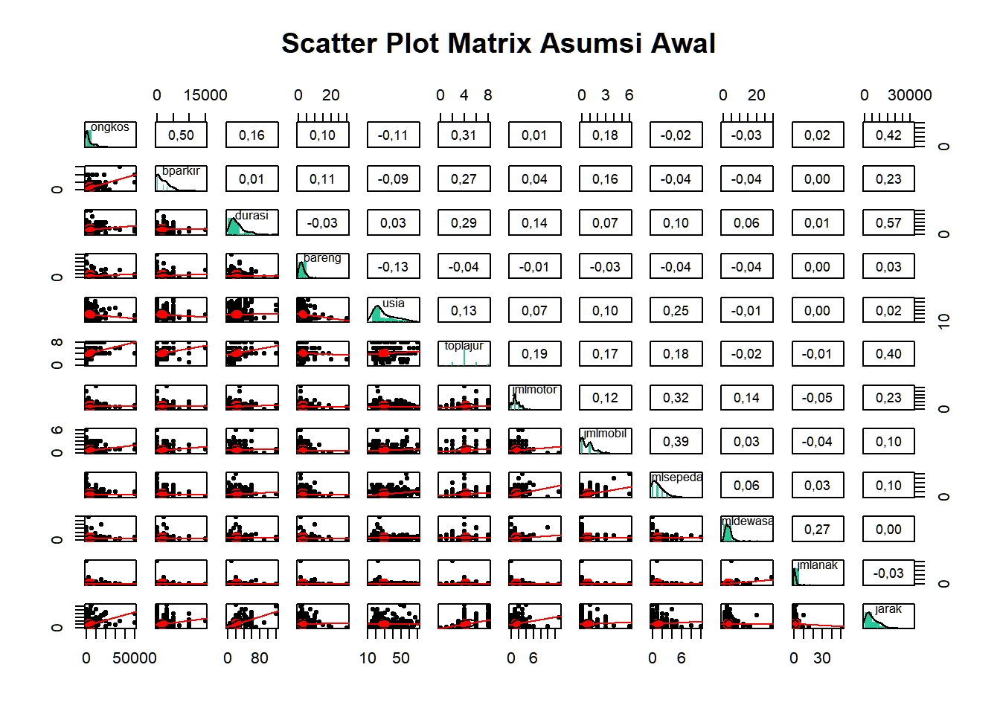
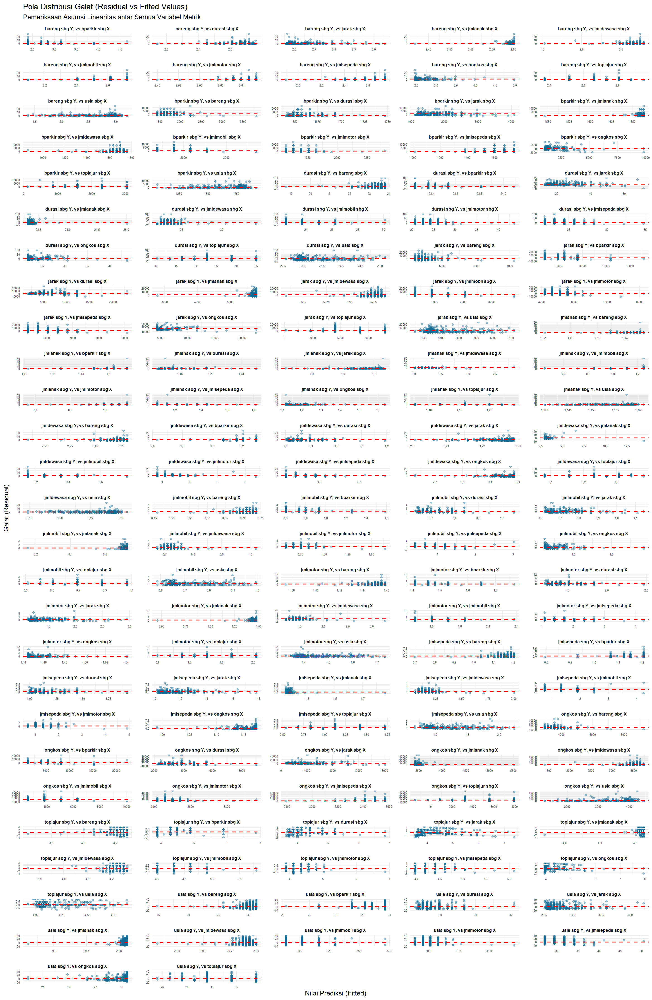
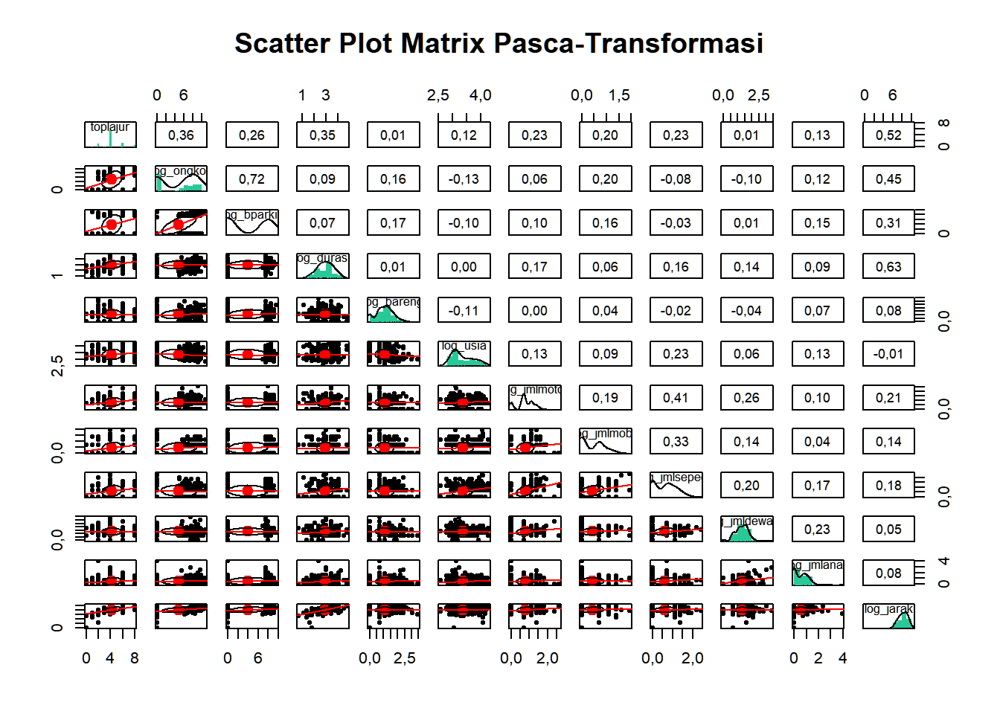
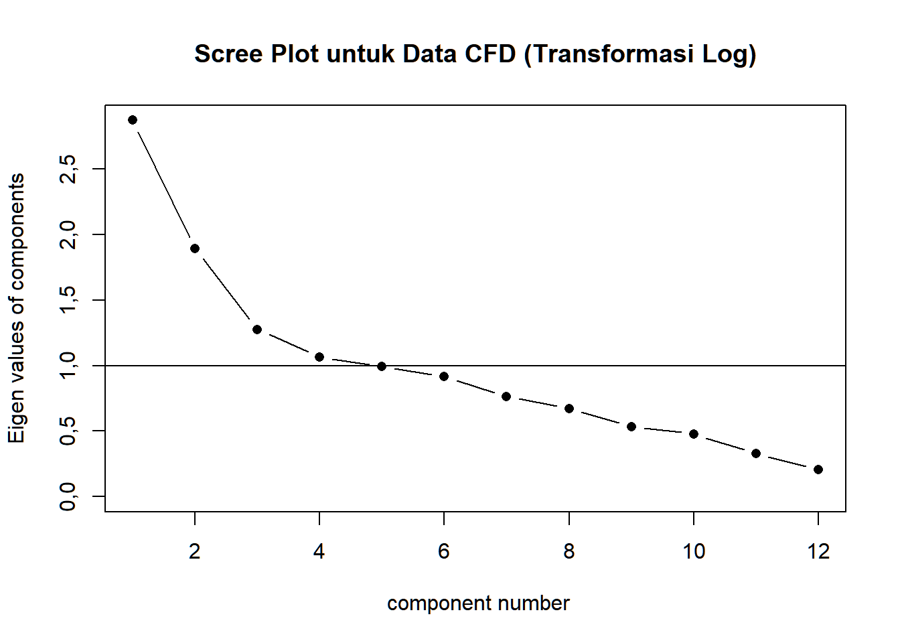

Bab 14 Analisis Statistik Multivariat Interdependensi: Analisis Komponen Prinsip dan Analisis Faktor
Capaian Pembelajaran
Setelah mempelajari bab ini Anda diharapkan:
- mampu menjelaskan kegunaan dan asumsi pendahuluan untuk melakukan analisis komponen prinsip dan analisis faktor STP-14.1
- mampu menginterpretasikan hasil analisis komponen prinsip/analisis faktor dengan benar STP-14.2
14.1 Konsep Dasar
Analisis komponen prinsip (principal component analysis, PCA) dan Analisis Faktor (common factor analysis) adalah metode analisis statistik multivariat lain yang berguna untuk mengurangi jumlah variabel yang dianalisis dengan meringkasnya.
Istilah “Dimensi”
Istilah “variabel†memiliki sebutan lain yakni dimensi (dimension). Ini merujuk pada visualisasi data yang dilakukan dengan sumbu-sumbu X, Y, dan Z. Sumbu-sumbu tersebut tidak lain adalah variabel kita. Jumlah sumbu menandakan jumlah dimensinya juga: 2 dimensi berarti mengandung 2 variabel, 3 dimensi berarti mengandung 3 variabel.
Analisis komponen prinsip dan analisis faktor termasuk ke dalam analisis multivariat juga, seperti halnya analisis Regresi. Akan tetapi, sebagaimana gambar serupa yang bisa kita lihat pada Gambar 13.1, pada Gambar 14.1 menunjukan posisi PCA dan CFA. Posisinya terletak pada jenis hubungan yang interdependen.

Gambar 14.1: Diagram Pohon Keputusan Asosiasi Multivariat: Bagian Interdependensi
Yang dimaksud dengan “hubungan interdependen†adalah hubungan yang seluruh variabelnya saling bergantung satu sama lain. Ini bermakna bahwa setiap variabel setara hubungannya sehingga tidak ada hubungan pengaruh (memengaruhi-dipengaruhi) seperti halnya yang ada dalam analisis regresi linear berganda.
14.2 Kegunaan PCA dan Analisis Faktor
PCA dan analisis faktor sama-sama memliki kegunaan untuk mengurangi jumlah variabel dari analisis kita. Seperti yang sudah disampaikan, pengurangan ini dilakukan bukan dengan menghilangkan sebagian variabel, melainkan dengan merangkumnya menjadi variabel baru yang disebut dimensi.
PCA dan Analisis Faktor memiliki perbedaan mendasar dalam memaknai hasil analisis masing-masing:
- PCA mengurangi variabel-variabel (data reduction) yang dianalisis dengan mengelompokkan variabel-variabel yang mirip menjadi satu variat yang merupakan penjumlahan nilai setiap variabel yang mirip tersebut.
- Analisis faktor meringkas variabel-variabel (data summarization) yang dianalisis dengan mengelompokkan variabel-variabel yang mirip saja tanpa mengubahnya menjadi variabel lain/variat.
Studi Kasus: Kegunaan PCA dan Analisis Faktor
Sebuah penelitian oleh Bindar (2022) mengidentifikasi struktur di balik variabel-variabel yang memengaruhi penduduk Kota Bandung memilih cara mengakses lokasi Car-Free Day. Terdapat 12 variabel yang diukur beserta singkatan yang digunakan disajikan pada Tabel 14.1 berikut.
| No. | Nama Variabel | Singkatan | No. | Nama Variabel | Singkatan |
|---|---|---|---|---|---|
| 1 | total biaya perjalanan | ongkos | 7 | jumlah sepeda motor | jmlmotor |
| 2 | biaya parkir | bparkir | 8 | jumlah mobil | jmlmobil |
| 3 | durasi perjalanan | durasi | 9 | jumlah sepeda | jmlsepeda |
| 4 | jumlah rombongan dalam perjalanan | bareng | 10 | jumlah orang dewasa dalam rumah tangganya | jmldewasa |
| 5 | jumlah lajur jalan terbanyak yang dilalui | toplajur | 11 | jumlah anak-anak dalam rumah tangganya | jmlanak |
| 6 | usia pelaku perjalanan | usia | 12 | jarak tempuh dari rumah ke lokasi CFD | jarak |
Pembahasan
Jika di akhir kita hanya ingin membuat pengelompokan variabel, maka kita cukup menggunakan analisis faktor. Lain halnya jika kita membutuhkan variat yang merupakan penjumlahan nilai-nilai variabel. Contoh variat misalnya adalah sebagai berikut:
\[ \begin{aligned} \text{total_biaya} &= \beta_1 \text{ongkos} + \beta_2 \text{biaya} \\ \text{impedansi} &= \beta_3 \text{jarak} + \beta_4 \text{durasi} \end{aligned} \]
Pengelompokan keempat variabel menjadi 2 variat serta nilai-nilai \(\beta_1\), \(\beta_2\), \(\beta_3\), dan \(\beta_4\), dihasilkan secara bersama-sama sebagai keluaran dari PCA
14.3 Asumsi-asumsi Dasar dalam Melakukan PCA/Analisis Faktor
Terdapat dua jenis asumsi dasar sebelum melakukan PCA/Analisis Faktor terhadap data kita. Yang pertama adalah asumsi konseptual, sedangkan yang kedua asumsi statistikal. Asumsi konseptual berbicara tentang kemasukakalan pengelompokan variabel-variabel yang dilibatkan. Kita harus memiliki justifikasi yang kuat secara konseptual bahwa di antara variabel-variabel yang kita analisis ada kelompok-kelompok yang bisa dibentuk. Asumsi kedua berbicara tentang kemungkinan dilakukannya analisis komponen prinsip dari sudut pandang ukuran statistik. Ada beberapa hal yang perlu kita perhatikan mengenai asumsi statistik:
- Baik PCA maupun Analisis Faktor menggunakan basis nilai koefisien korelasi \(r\) Pearson sebagai pengelompokan. Oleh karena itu, variabel-variabel yang bisa kita analisis dengan PCA adalah variabel metrik (interval/rasio).
- Idealnya, setiap variabel metrik dalam variabel-variabel yang dianalisis berdistribusi normal.
- Terdapat hubungan linear antarvariabel yang ditunjukkan oleh pola diagram pencar antarvariabel yang disebut juga asumsi linearitas.
Studi Kasus: Asumsi Konseptual dan Statistikal
Asumsi Konseptual
Secara substansi, kita dapat melihat kemungkinan pemngelompokan dalam variabel-variabel yang dianalisis. Misalnya, variabel jarak tempuh dari rumah ke lokasi CFD dan durasi perjalanan kemungkinan besar akan berkorelasi positif, karena penambahan jarak tempuh pastinya akan menambah durasi perjalanan juga. Kemudian, variabel jumlah sepeda motor dan jumlah mobil kemungkinan besar akan berkorelasi positif, karena kepemilikan kendaraan bermotor berbanding lurus dengan pendapatan, sehingga bisa dianalisis bahwa kedua variabel tersebut memiliki hubungan. Dengan demikian, kita bisa katakan bahwa asumsi konseptual untuk kasus ini bisa dipenuhi.
Asumsi Statistikal
Dilihat dari tingkat pengukurannya, seluruh variabel yang akan kita analisis adalah variabel metrik, karena ukuran semua variabel adalah angka yang bermakna, serta memiliki posisi nol yang absolut dan masuk akal. Akan tetapi, secara ukuran kenormalan distribusi dan linearitas, dataset ini tidak memenuhi asumsi tersebut. Ini dapat dilihat dari hasil analisis grafis dan koefisien korelasi r-Pearsonnya seperti pada Gambar 14.2.

Gambar 14.2: Grafik Analisis CFD
Analisis scatter-plot antara residual (galat model vs data) dengan model (hasil prediksi) seperti yang ditampilkan Gambar 14.3 berikut memperlihatkan beberapa pasangan variabel yang memiliki heteroskedastisitas (sebaran residual yang melebar ke kanan, seiring bertambahnya nilai variabel dependen). Misalnya, durasi sebagai X, vs bparkir sebagai Y atau jarak sebagai X, vs jmlanak sebagai Y. Solusinya adalah kita mentransformasi nilai-nilai variabel kita dengan fungsi lain. Yang paling umum adalah fungsi logaritmik (\(log\) atau \(ln\)). Variabel mana yang kita ubah? Kita bisa memilih variabel yang mempunyai kemiringan ke kanan (right-skewed). Variabel-variabel tersebut dapat kita lihat pada Gambar 14.2.

Gambar 14.3: Scatter Plot Residual vs Fitted untuk Seluruh Pasangan Variabel
Untuk mengatasi masalah non-linearitas ini, seperti yang sudah dijelaskan, kita dapat melakukan transformasi nilai. Melihat bentuk rentang distribusi dari pengamatan grafik bar sebelumnya yang hampir seluruhnya “menceng kanan” (berkumpul pada nilai kecil dengan outlier nilai sangat besar), pendekatan logaritma natural (log()) sangat cocok diterapkan, dan akan kita terapkan hampir di semua variabel kecuali toplajur. Mari kita lihat pola korelasi terbarunya setelah data-data tersebut ditransformasikan menggunakan operasi logaritma.

Gambar 14.4: Grafik Scatterplot Matrix CFD Pasca-Transformasi Logaritma
Dapat dilihat pada Gambar 14.4 bahwa elips yang ditunjukkan antara log_ongkos dan variabel metrik lain (juga pada log_jarak) sudah menunjukkan orientasi yang miring dan lebih memanjang mengikuti titik referensi linear utamanya (titik sumbu silang). Elipsnya tidak lagi membulat atau berpusat sembarang di pojok seperti bentuk hubungan pada grafik sebelumnya. Pola linear ini menandakan bahwa hubungan tersebut kini terbaca lebih linear, sehingga korelasi Pearson bekerja lebih optimal dan pada gilirannya meningkatkan signifikansi variabel saat hendak dilibatkan dalam analisis komponen prinsip atau analisis faktor.
14.4 Langkah-langkah dalam Melakukan PCA atau Analisis Faktor
Setelah kita mengecek asumsi-asumsi, kita melakukan langkah-langkah berikut dalam melakukan analisis komponen prinsip. Secara umum langkah-langkah yang kita perlu lakukan di antaranya:
- mempersiapkan data,
- mengekstrak dimensi baru, melakukan rotasi, dan
- interpretasi dimensi
Tentu saja, secara teknis langkah-langkah ini kita lakukan dengan bantuan program komputer, bukan dengan hitungan manual seperti materi-materi sebelumnya.
14.4.1 Mempersiapkan Data
Di langkah ini kita melakukan uji kelayakan data untuk memastikan data kita memiliki interkorelasi yang memadai, artinya terdapat korelasi yang cukup kuat satu sama lain antarvariabel yang kita analisis. Pemenuhan kriteria ini dilihat dari 2 indikator:
Uji Bartlett of Sphericity, kriteria korelasi memadai adalah ketika p-value pengujian < 0,05, dan
-
Measure of Sampling Adequacy yang diuji menggunakan koefisien Kaiser-Meyer-Olkin (KMO) test, kriteria korelasi memadai adalah ketika nilai tes KMO > 0,5.
Ada dua jenis nilai KMO, yaitu KMO secara keseluruhan dan KMO secara individual. Jika nilai KMO secara keseluruhan > 0,5 maka data kita layak untuk dilakukan analisis PCA atau analisis faktor. Akan tetapi, jika nilai KMO secara individual < 0,5 maka variabel tersebut dikeluarkan analisis PCA atau analisis faktor.
Studi Kasus: Uji Kelayakan Data (interkorelasi)
## P-value Bartlett's Test of Sphericity adalah 1,191296e-141
##
## Kaiser-Meyer-Olkin factor adequacy
## Call: KMO(r = dataCFDMetric_Log)
## Overall MSA = 0,65
## MSA for each item =
## toplajur log_ongkos log_bparkir log_durasi log_bareng
## 0,84 0,58 0,65 0,59 0,74
## log_usia log_jmlmotor log_jmlmobil log_jmlsepeda log_jmldewasa
## 0,68 0,74 0,67 0,65 0,59
## log_jmlanak log_jarak
## 0,60 0,65Berdasarkan pengujian kedua indikator menggunakan R tersebut, nilai p pengujian Bartlett of Sphericity menunjukkan nilai 1,191296e-141. Nilai MSA/nilai uji KMO keseluruhan menunjukkan 0,6531869.
Ini berarti uji Bartlett of Sphericity menunjukkan hasil yang signifikan karena bernilai <0,05 serta untuk MSA nilai uji KMO berada lebih dari 0,5. Secara uji kelayakan data, maka data kita dikatakan layak. Hasil uji KMO untuk setiap variabel juga menunjukkan tidak adanya variabel yang memiliki nilai MSA <0,5 yang berarti data kita bisa terus dianalisis.
14.4.2 Mengekstrak Dimensi Baru
Jika kriteria-kriteria Bartlett’s test of sphericity serta MSA terpenuhi, kita dapat melanjutkan analisis kita ke tahap kedua, yakni mengekstrak atau ekstraksi dimensi baru. Terdapat dua metode dalam melakukan ekstraksi dimensi baru: metode principal component analysis (PCA) dan common factor analysis atau yang akan kita sebut analisis faktor.
Secara konseptual perbedaan keduanya sudah dijelaskan di subbab 14.2. Secara teknis, perbedaan antara PCA dan analisis faktor terletak pada variat dan factor score. Dua hal ini hanya dihasilkan dari PCA. Analisis faktor tidak menghasilkan dua hal ini, tetapi hanya mengelompokkan variabel-variabel yang mirip dalam satu dimensi baru.
Mengekstrak dimensi baru membutuhkan keputusan terkait jumlah dimensi baru yang diekstrak. Untuk memutuskannya, kita melakukan analisis lain yang disebut analisis paralel (parallel analysis). Analisis paralel dilakukan dengan menggunakan pendekatan eigenvalue (nilai eigen) dan scree plot (grafik patahan).
14.4.2.1 Pendekatan Eigenvalue
Sebelum sampai ke pembahasan eigenvalue, kita akan mulai dari konsep yang paling awal terlebih dahulu: nilai terstandar dan variansi totalnya.
Sebelum diolah, nilai-nilai seluruh variabel analisis kita distandarkan terlebih dahulu, atau diubah dalam bentuk Z-score. Artinya seluruh variabel akan mempunyai nilai rata-rata dan variansi/simpangan baku yang sama, yakni 0 dan 1, secara berturut-turut. Untuk menstandarkan nilai-nilai variabel kita, seperti yang sudah dibahas dalam Bab 5, yakni pada persamaan (5.5), setiap nilai dalam data kita (\(x_i\)) dihitung dengan persamaan berikut:
\[ Z_i = \frac{x_i - \bar{x}}{s} \]
Variansi bisa dihitung. Jika kita berbicara total variansi, artinya kita menjumlahkan seluruh variansi variabel yang kita analisis. Karena setiap variabel sudah terstandardisasi, variansinya bernilai 1. Karena itu juga, total variansi variabel-variabel yang kita analisis akan bernilai sama seperti jumlah variabel kita.
Setiap dimensi atau jumlah dimensi yang dihasilkan dari gabungan variabel-variabel analisis kita memiliki sebuah skor yang disebut Nilai eigen atau eigenvalue. Nilai eigen atau eigenvalue adalah nilai yang merepresentasikan besar atau porsi variansi dari variabel asli yang berhasil dirangkum oleh dimensi tersebut. Nilai ini kita gunakan untuk menentukan jumlah dimensi baru yang kita hasilkan dalam analisis paralel.
Tabel yang menunjukkan nilai eigen dan persentase kumulatif total nilai eigen untuk setiap jumlah dimensi biasa digunakan untuk menentukan jumlah dimensi yang dihasilkan. Tabel tersebut memiliki baris yang berjumlah sama dengan jumlah variabel yang dianalisis. Dengan demikian, jumlah dimensi yang akan dihasilkan bisa berjumlah 1 yang berisi \(n\) variabel yang dianalisis hingga \(n\) dimensi yang masing-masing hanya berisi 1 variabel analisis. Kita akan memilih jumlah yang optimal di antara itu.
Kriteria yang digunakan untuk menentukan jumlah dimensi biasanya adalah yang memiliki nilai eigen \(>1{,}00\) atau yang memiliki persentase kumulatif total nilai eigen \(\geq 60\%\) (Hair et al. 2013).
Studi Kasus: Mengekstrak Sejumlah Dimensi Baru Menggunakan Nilai Eigen
Tabel 14.2 berikut menampilkan nilai eigen dan persentase kumulatif total nilai eigen untuk setiap jumlah dimensi. Berdasarkan kriteria yang telah disebutkan sebelumnya, yakni nilai eigen \(>1{,}00\) atau yang memiliki persentase kumulatif total nilai eigen \(\geq 60\%\). Sehingga jumlah dimensi yang akan diekstrak adalah 4 dimensi, walaupun pada jumlah tersebut nilai persentase kumulatif total nilai eigen-nya tidak pas 60%, kita bisa menganggap nilai 59,2257% tersebut mendekati 60% saja.
| Jumlah dimensi | Nilai Eigen | Persentase Kumulatif (%) |
|---|---|---|
| 1 | 2,8721 | 23,9342 |
| 2 | 1,8922 | 39,7022 |
| 3 | 1,2761 | 50,3363 |
| 4 | 1,0667 | 59,2257 |
| 5 | 0,9924 | 67,4956 |
| 6 | 0,9154 | 75,1241 |
| 7 | 0,7647 | 81,4967 |
| 8 | 0,6730 | 87,1051 |
| 9 | 0,5352 | 91,5653 |
| 10 | 0,4775 | 95,5445 |
| 11 | 0,3268 | 98,2681 |
| 12 | 0,2078 | 100,0000 |
14.4.2.2 Pendekatan Scree Plot
Untuk scree plot, kita perlu membuat grafik garis untuk nilai eigen dengan jumlah dimensinya. Jumlah dimensi yang kita ambil adalah titik yang menandakan perbelokan melandai pertama yang ada pada grafik tersebut. Scree plot pada dasarnya memetakan nilai eigen terhadap jumlah dimensi.
Studi Kasus: Mengekstrak Sejumlah Dimensi Baru Menggunakan Scree Plot
Grafik untuk kasus kita diperlihatkan pada Gambar 14.5. Pada gambar tersebut, perbelokan melandai agak sulit ditentukan karena nampaknya tidak perbelokan yang terlalu tajam pada titik mana pun. Dengan demikian, kriteria ini sulit untuk digunakan dalam menentukan jumlah dimensi yang akan diekstrak.

Gambar 14.5: Scree Plot untuk Data CFD (Transformasi Log)
Karena kesulitan dalam pendekatan ini, kita akan menentukan jumlah dimensi yang akan diekstrak menggunakan pendekatan nilai eigen saja, yakni 4 dimensi.
14.4.3 Mengelompokkan Variabel-variabel ke dalam Dimensi Baru
Setelah memutuskan jumlah dimensi yang kita ekstrak, kita harus mengelompokkan variabel-variabel ke dalam dimensi yang kita ekstrak.
Istilah “dimensi†ini sekarang harus kita bedakan. Jika kita menggunakan PCA, maka nama dimensi kita adalah komponen atau variat. Namun apabila kita menggunakan analisis faktor, dimensi kita disebut faktor.
Variabel dikelompokkan ke dalam dimensi berdasarkan nilai loading-nya. Setiap variabel mempunyai nilai loading untuk tiap-tiap dimensi yang disajikan dalam factor matrix. Untuk menentukan ke dalam dimensi mana tiap-tiap variabel dikelompokkan, kita mengacu pada nilai absolut loading terbesar yang ada di antara sejumlah dimensi yang diekstrak.
Studi Kasus: Mengelompokkan Variabel-variabel ke dalam Dimensi Baru
Untuk Analisis Komponen Prinsip
Berikut adalah tabel loading untuk komponen-komponen yang diekstrak. Karena kita sudah menentukan jumlah dimensi yang diekstrak adalah 4, kita hanya tinggal menggolongkan tiap-tiap variabel ke dalam komponen yang memiliki nilai loading absolut terbesar. Sel yang tidak memiliki angka menandakan nilai loading variabel dalam dimensi tersebut sangat kecil hingga mendekati nol.
##
## Loadings:
## PC1 PC2 PC3 PC4
## toplajur 0,706 -0,227 -0,195
## log_ongkos 0,623 -0,605 0,239 -0,123
## log_bparkir 0,572 -0,528 0,376
## log_durasi 0,568 0,109 -0,620 0,283
## log_bareng 0,146 -0,286 0,284 0,289
## log_usia 0,491 -0,308
## log_jmlmotor 0,464 0,450 0,131
## log_jmlmobil 0,418 0,207 0,377 -0,414
## log_jmlsepeda 0,409 0,630 0,137 -0,183
## log_jmldewasa 0,217 0,469 0,246 0,522
## log_jmlanak 0,305 0,189 0,363 0,522
## log_jarak 0,780 -0,124 -0,433
##
## PC1 PC2 PC3 PC4
## SS loadings 2,872 1,892 1,276 1,067
## Proportion Var 0,239 0,158 0,106 0,089
## Cumulative Var 0,239 0,397 0,503 0,592Berdasarkan hasil PCA tersebut, pengelompokan tiap-tiap komponennya adalah:
- toplajur : PC1
- log_ongkos : PC1
- log_bparkir : PC1
- log_durasi : PC3
- log_bareng : PC4
- log_usia : PC2
- log_jmlmotor : PC2
- log_jmlmobil : PC1
- log_jmlsepeda : PC2
- log_jmldewasa : PC4
- log_jmlanak : PC4
- log_jarak : PC1
Dengan demikian, pengelompokan tiap-tiap komponennya ditunjukkan oleh Tabel 14.3 berikut.
| PC1 | PC2 | PC3 | PC4 |
|---|---|---|---|
| toplajur | log_usia | log_durasi | log_bareng |
| log_ongkos | log_jmlmotor | log_jmldewasa | |
| log_bparkir | log_jmlsepeda | log_jmlanak | |
| log_jmlmobil | |||
| log_jarak |
Untuk Analisis Faktor
Berikut adalah tabel loading untuk faktor-faktor yang diekstrak. Karena kita sudah menentukan jumlah dimensi yang diekstrak adalah 4, kita hanya tinggal menggolongkan tiap-tiap variabel ke dalam faktor yang memiliki nilai loading absolut terbesar.
##
## Loadings:
## MR1 MR2 MR3 MR4
## toplajur 0,596 -0,162
## log_ongkos 0,691 -0,582 0,306
## log_bparkir 0,552 -0,397 0,342
## log_durasi 0,515 0,180 -0,392 -0,321
## log_bareng 0,113 -0,138
## log_usia 0,270 0,199
## log_jmlmotor 0,349 0,347 0,166
## log_jmlmobil 0,312 0,156 0,125 0,251
## log_jmlsepeda 0,338 0,574 0,456
## log_jmldewasa 0,207 0,653 0,575 -0,445
## log_jmlanak 0,217 0,147 0,163
## log_jarak 0,809 -0,372 -0,233
##
## MR1 MR2 MR3 MR4
## SS loadings 2,495 1,543 0,915 0,711
## Proportion Var 0,208 0,129 0,076 0,059
## Cumulative Var 0,208 0,337 0,413 0,472Loadings:
MR1 MR2 MR3 MR4
toplajur 0.596 -0.162
log_ongkos 0.691 -0.582 0.306
log_bparkir 0.552 -0.397 0.342
log_durasi 0.515 0.180 -0.392 -0.321
log_bareng 0.113 -0.138
log_usia 0.270 0.199
log_jmlmotor 0.349 0.347 0.166
log_jmlmobil 0.312 0.156 0.125 0.251
log_jmlsepeda 0.338 0.574 0.456
log_jmldewasa 0.207 0.653 0.575 -0.445
log_jmlanak 0.217 0.147 0.163
log_jarak 0.809 -0.372 -0.233
Berdasarkan hasil analisis faktor tersebut, pengelompokan tiap-tiap faktornya adalah:
- toplajur : MR1
- log_ongkos : MR1
- log_bparkir : MR1
- log_durasi : MR1
- log_bareng : MR2
- log_usia : MR2
- log_jmlmotor : MR1
- log_jmlmobil : MR1
- log_jmlsepeda : MR2
- log_jmldewasa : MR2
- log_jmlanak : MR1
- log_jarak : MR1
Dengan demikian, pengelompokan tiap-tiap faktornya ditunjukkan oleh Tabel 14.4 berikut.
| MR1 | MR2 | MR3 | MR4 |
|---|---|---|---|
| toplajur | log_bareng | ||
| log_ongkos | log_usia | ||
| log_bparkir | log_jmlsepeda | ||
| log_durasi | log_jmldewasa | ||
| log_jmlmotor | |||
| log_jmlmobil | |||
| log_jmlanak | |||
| log_jarak |
14.4.4 Merotasi Dimensi
Nilai-nilai loading bisa tidak kontras antarfaktor atau antarkomponen. Ini membuat pengelompokan tidak tegas. Untuk membuat nilai loading dalam setiap faktor atau komponen cenderung kontras atau timpang satu sama lain, kita dapat melakukan rotasi. Proses rotasi akan memberatkan nilai loading tiap-tiap variabel ke satu faktor atau komponen sehingga pengelompokan dapat dilakukan dengan lebih baik.
Terdapat banyak jenis rotasi faktor atau komponen yang digolongkan menjadi orthogonal dan oblique. Teknik rotasi yang termasuk ke dalam jenis orthogonal dan banyak dipakai antara lain quartimax, varimax, dan equamax. Sementara itu, teknik rotasi jenis oblique yang banyak dipakai antara lain promax, oblimin, dan simplimax.
Studi Kasus: Merotasi Dimensi Menggunakan Varimax
Sekarang kita akan menerapkan salah satu teknik rotasi yakni varimax baik untuk analisis komponen prinsip kita maupun analisis faktor.
Untuk Analisis Komponen Prinsip
##
## Loadings:
## RC1 RC3 RC2 RC4
## toplajur 0,622 0,289 0,331
## log_ongkos 0,242 0,872
## log_bparkir 0,125 0,852
## log_durasi 0,872 -0,107 0,157
## log_bareng 0,385 -0,199 0,275
## log_usia -0,214 0,550
## log_jmlmotor 0,225 0,552 0,284
## log_jmlmobil 0,319 0,653
## log_jmlsepeda 0,163 -0,109 0,726 0,224
## log_jmldewasa -0,119 0,185 0,741
## log_jmlanak 0,174 0,704
## log_jarak 0,855 0,279
##
## RC1 RC3 RC2 RC4
## SS loadings 2,039 2,013 1,758 1,298
## Proportion Var 0,170 0,168 0,146 0,108
## Cumulative Var 0,170 0,338 0,484 0,592- toplajur : RC1
- log_ongkos : RC3
- log_bparkir : RC3
- log_durasi : RC1
- log_bareng : RC3
- log_usia : RC2
- log_jmlmotor : RC2
- log_jmlmobil : RC2
- log_jmlsepeda : RC2
- log_jmldewasa : RC4
- log_jmlanak : RC4
- log_jarak : RC1
Dengan demikian, pengelompokan tiap-tiap komponennya ditunjukkan oleh Tabel 14.5 berikut.
| RC1 | RC2 | RC3 | RC4 |
|---|---|---|---|
| toplajur | log_usia | log_ongkos | log_jmldewasa |
| log_durasi | log_jmlmotor | log_bparkir | log_jmlanak |
| log_jarak | log_jmlmobil | ||
| log_jmlsepeda |
Untuk Analisis Faktor
##
## Loadings:
## MR2 MR1 MR4 MR3
## toplajur 0,268 0,471 0,308
## log_ongkos 0,937 0,194
## log_bparkir 0,751 0,106
## log_durasi 0,733 0,104
## log_bareng 0,193
## log_usia -0,139 0,312
## log_jmlmotor 0,171 0,458 0,178
## log_jmlmobil 0,182 0,398
## log_jmlsepeda -0,120 0,124 0,787
## log_jmldewasa 0,160 0,982
## log_jmlanak 0,116 0,190 0,207
## log_jarak 0,286 0,866 0,125
##
## MR2 MR1 MR4 MR3
## SS loadings 1,722 1,610 1,264 1,069
## Proportion Var 0,144 0,134 0,105 0,089
## Cumulative Var 0,144 0,278 0,383 0,472Dengan demikian, pengelompokan tiap-tiap faktornya adalah sebagai berikut.
- toplajur : MR1
- log_ongkos : MR2
- log_bparkir : MR2
- log_durasi : MR1
- log_bareng : MR2
- log_usia : MR4
- log_jmlmotor : MR4
- log_jmlmobil : MR4
- log_jmlsepeda : MR4
- log_jmldewasa : MR3
- log_jmlanak : MR3
- log_jarak : MR1
Dengan demikian, pengelompokan tiap-tiap faktornya ditunjukkan oleh Tabel 14.6 berikut.
| MR1 | MR2 | MR3 | MR4 |
|---|---|---|---|
| toplajur | log_ongkos | log_jmldewasa | log_usia |
| log_durasi | log_bparkir | log_jmlanak | log_jmlmotor |
| log_jarak | log_bareng | log_jmlmobil | |
| log_jmlsepeda |
Perhatikan bahwa hasil rotasi faktor, baik di analisis komponen prinsip maupun analisis faktor, menghasilkan pengelompokan yang berbeda, terutama analisis faktor. Dengan merotasi dimensi kita, kita dapat memperoleh pengelompokan yang lebih baik, lebih merata.
14.4.5 Memperoleh Skor Komponen (Khusus PCA)
Jika kita melakukan analisis komponen prinsip, langkah setelah kita merotasi komponen adalah memperoleh skor komponen. Skor komponen ini bertindak seperti halnya koefisien dalam variabel-variabel independen. Gunanya adalah untuk membentuk variat yang merupakan persamaan linear yang disusun oleh variabel-variabel anggotanya.
Studi Kasus: Skor Komponen
Berdasarkan hasil rotasi komponen pada analisis komponen prinsip sebelumnya, kita dapat memperoleh skor komponen yang hasilnya sebagai berikut.
## RC1 RC3 RC2 RC4
## toplajur 0,2698448898 0,06185094 0,147576682 -0,16431033
## log_ongkos -0,0001587735 0,43591296 0,002633547 -0,08886238
## log_bparkir -0,0742058511 0,44423828 0,001300764 0,04262334
## log_durasi 0,5184147911 -0,20292687 -0,173049076 0,09273347
## log_bareng -0,0833757986 0,21490275 -0,159137562 0,26415927
## log_usia -0,0512698654 -0,10229332 0,357584049 -0,11549171
## log_jmlmotor 0,0350256675 -0,01468710 0,275851814 0,13075177
## log_jmlmobil -0,1633454889 0,19304302 0,436062929 -0,12960943
## log_jmlsepeda -0,0002867880 -0,07286672 0,404523751 0,05463730
## log_jmldewasa -0,0118721576 -0,07246386 -0,017484482 0,58147855
## log_jmlanak -0,0561462339 0,08874112 -0,072760073 0,56999606
## log_jarak 0,4355962822 0,01305148 -0,062758122 -0,04884673Berdasarkan keluaran skor tersebut, kita dapat menuliskan persamaan variat sebagai berikut.
\[ \begin{aligned} RC1 &= 0{,}263 \text{toplajur} + 0{,}518\text{log_durasi} + 0{,}436 \text{log_jarak} \\ RC2 &= 0{,}357\text{log_usia} + 0{,}276 \text{log_jmlmotor} + 0{,}436 \text{log_jmlmobil} + 0{,}405 \text{log_jmlsepeda} \\ RC3 &= 0{,}436 \text{log_ongkos} + 0{,}444 \text{log_bparkir} \\ RC4 &= 0{,}581 \text{log_jmldewasa} + 0{,}570 \text{log_jmlanak} \end{aligned} \]
14.4.6 Interpretasi Dimensi
Langkah terakhir adalah menginterpretasi dimensi baru yang mengelompokkan variabel-variabel analisis kita. Di sini, kita memberi nama dimensi-dimensi dengan nama yang sesuai.
Untuk PCA, interpretasi akhir kita adalah persamaan akhir variat yang kita gunakan untuk mengurangi jumlah kolom dalam dataset kita. Sedangkan untuk analisis faktor, interpretasi akhir kita adalah nama-nama dari tiap-tiap faktornya yang lebih kontekstual.
Studi Kasus: Interpretasi Faktor
Dari kasus sebelumnya, kita mendapatkan pengelompokan faktor seperti berikut.
| MR1 | MR2 | MR3 | MR4 |
|---|---|---|---|
| toplajur | log_ongkos | log_jmldewasa | log_usia |
| log_durasi | log_bparkir | log_jmlanak | log_jmlmotor |
| log_jarak | log_bareng | log_jmlmobil | |
| log_jmlsepeda |
Kita dapat mengubah nama “MR1”, “MR2”, “MR3”, dan “MR4” pada tabel tersebut dengan nama kelompok yang lebih kontekstual lagi mewakili anggota-anggota faktornya. Misalnya, kita dapat menggunakan nama impedansi perjalanan, biaya perjalanan, faktor rumah tangga, dan faktor kepemilikan kendaraan untuk MR1, MR2, MR3, dan MR4.
Alasan penamaan faktor tersebut secara demikian bisa dijelaskan sebagai berikut:
- istilah “impedansi” merujuk pada pengertian “hambatan” dari perjalanan yang dilakukan. Jarak dan waktu tempuh sudah jelas menggambarkan hambatan yang akan memengaruhi orang untuk mengakses lokasi CFD atau tidak. Jika jaraknya dekat atau waktu tempuhnya singkat, impedansinya kecil, kemungkinan besar orang mau mengakses lokasi CFD. Untuk jumlah lajur paling banyak, kita bisa anggap hal tersebut sebagai pemikiran jika mengakses lokasi CFD memerlukan akses ke jalan yang lebih banyak lajurnya, dengan kata lain lebih ramai, mengakses lokasi CFD mengalami kenaikan impedansi;
- dua variabel, biaya perjalanan (
ongkos) dan biaya parkir (bparkir) sangat digambarkan oleh istilah “biaya”. Walaupun nampaknya variabel jumlah orang dalam rombongan perjalanan (bareng) tidak ada kaitannya dengan biaya, jika kita pikirkan secara lebih mendalam, jumlah orang dalam rombongan perjalanan bisa memengaruhi moda yang dipilih. Jika jumlah rombongannya banyak, orang akan cenderung menggunakan kendaraan bermotor untuk mengakses lokasi CFD, yang berpengaruh pada biaya parkir; - jumlah orang dewasa (
jmldewasa) dan jumlah anak (jmlanak) sudah jelas merupakan variabel-variabel yang menggambarkan kondisi “rumah tangga” (household). Perlu dipahami bahwa pengertian “rumah tangga” di sini lebih ditujukan pada unit amatan alih-alih pada keluarga yang terdiri atas suami, istri, dan anak. Dua orang mahasiswa yang tinggal di suatu rumah kontrakan pada dasarnya bisa kita sebut sebagai “rumah tangga”; - seperti halnya poin-2, kita bisa menyangkutpautkan
usiadengan kepemilikan kendaraan. Orang yang lebih tua cenderung memiliki kendaraan bermotor ketimbang orang yang masih belia.
Kerjakan soal evaluasi berikut untuk menguji pemahaman Anda terhadap analisis komponen prinsip dan analisis faktor
Soal Evaluasi 23
-
STP-14.1 Diperoleh hasil pengujian awal dari 10 variabel yang dianalisis menggunakan PCA sebagai berikut.
P-value Bartlett's Test of Sphericity adalah 0.12196 Kaiser-Meyer-Olkin factor adequacy Call: KMO(r = dataSoal1) Overall MSA = 0.46 MSA for each item = x1 x2 x3 x4 x5 x6 x7 0.36 0.47 0.67 0.48 0.53 0.56 0.49 x8 x9 x10 0.73 0.44 0.55Apa yang bisa kita simpulkan dari hasil pengujian tersebut terhadap PCA yang akan dilakukan?
-
STP-14.2 Sebuah riset dilakukan untuk menilai kualitas sebuah taman kota menggunakan instrumen dari 9 variabel evaluasi. Analisis faktor telah dilaksanakan terhadap kesembilan variabel tersebut dan telah merangkumnya menjadi tiga faktor secara seimbang (F1, F2, dan F3) yang diperlihatkan nilai-nilai loading pada Tabel 14.8 berikut.
Tabel 14.8: Matriks Faktor Variabel Kualitas Taman Kota Variabel F1 F2 F3 Kebersihan area taman 0,782 0,145 0,112 Ketersediaan tempat sampah 0,695 0,112 0,205 Keindahan dan perawatan tanaman 0,812 0,231 0,088 Ketersediaan tempat duduk 0,124 0,756 0,198 Kondisi area bermain anak 0,203 0,841 0,154 Ketersediaan toilet umum 0,155 0,689 0,221 Ketersediaan lampu penerangan 0,105 0,245 0,825 Hadirnya petugas pengawas 0,089 0,187 0,774 Kemudahan akses masuk 0,215 0,098 0,698 Keterangan variabel yang dianalisis:
- Kebersihan area taman: persentase luasan area pedestrian (paving/track) yang secara visual bebas dari hambatan sampah (%).
- Ketersediaan tempat sampah: kepadatan sebaran jumlah tempat sampah riil di seluruh kawasan (unit per \(m^2\)).
- Keindahan dan perawatan tanaman: skor indeks tutupan kanopi peneduh di area taman (rentang metrik 1-100).
- Ketersediaan tempat duduk: rasio perbandingan jumlah bangku taman terhadap estimasi jumlah pengunjung di jam-jam sibuk.
- Kondisi area bermain anak: total luasan spasial lantai fasilitas bermain anak (playground) yang layak pakai (\(m^2\)).
- Ketersediaan toilet umum: keberadaan jumlah bilik MCK atau toilet fungsional per kapita pengunjung di akhir pekan.
- Ketersediaan lampu penerangan: besaran intensitas pencahayaan rata-rata pada titik-titik kumpul di taman saat malam hari (Lux).
- Hadirnya petugas pengawas: tingkat frekuensi durasi dan putaran patroli keamanan atau linmas per hari (putaran/hari).
- Kemudahan akses masuk: jarak meter dari pintu gerbang atau akses pejalan kaki taman menuju perhentian transportasi terdekat (meter).
Berdasarkan besaran nilai loading dalam Matriks Faktor di Tabel 14.8 tersebut:
- Tentukan variabel-variabel mana saja yang menyusun masing-masing faktor (F1, F2, dan F3)!
- Berikan pemberian nama yang komprehensif bagi ketiga faktor baru tersebut berdasarkan atas esensi logis variabel-variabel utamanya, lalu jelaskan alasan logis singkat Anda!